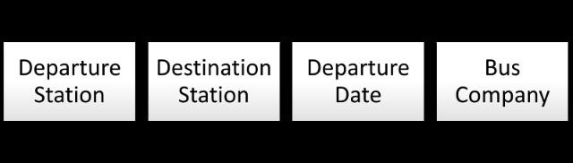
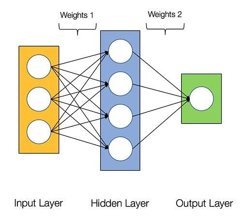
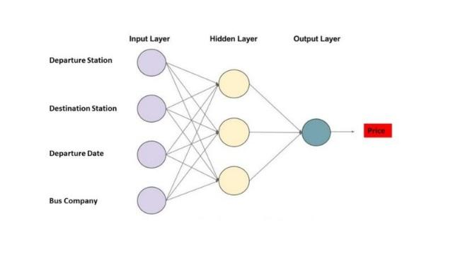
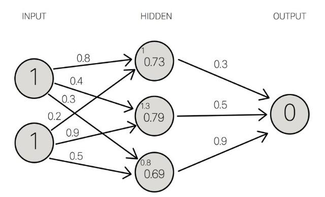
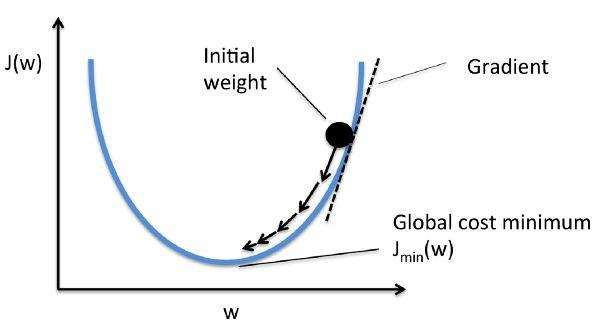

我们都熟悉“人工智能”这个词。但你最近可能听说过“机器学习” ( Machine Learning )和“深度学习” ( Deep Learning ) 等其他术语，它们有时会与人工智能 ( AI ) 互换使用。因此，人工智能、机器学习和深度学习之间的区别可能非常不清楚。关于这个主题的文章通常都有很多的高等数学、代码，或者是其他令人困惑的高层次，以致于无法触及。通过本文，您将了解AI和机器学习的基础知识。此外，您将了解最流行的机器学习类型深度学习是如何工作的。
定义
在深入学习深度学习的原理之前，我们必须先解释下重要术语之间的差异。
人工智能vs机器学习
人工智能是计算机科学的一个分支，研究计算机中智能行为的仿真。
每当一台机器根据一组预先定义的解决问题的规则来完成任务时，这种行为就被称为人工智能。
开发人员引入了大量计算机需要遵守的规则。计算机内部存在一个可能行为的具体清单，它会根据这个清单做出决定。如今，人工智能是一个概括性术语，涵盖了从高级算法到实际机器人的所有内容。
我们有四个不同层次的AI，让我们来解释前两个:
弱人工智能，也被称为狭义人工智能，是一种为特定的任务而设计和训练的人工智能系统。弱人工智能的形式之一是虚拟个人助理，比如苹果公司的Siri。
强人工智能，又称人工通用智能，是一种具有人类普遍认知能力的人工智能系统。当计算机遇到不熟悉的任务时，它具有足够的智能去寻找解决方案。
机器学习是指计算机使用大数据集而不是硬编码规则来学习的能力。
机器学习允许计算机自己学习。这种学习方式利用了现代计算机的处理能力，可以轻松地处理大型数据集。
基本上，机器学习是人工智能的一个子集;更为具体地说，它只是一种实现AI的技术，一种训练算法的模型，这种算法使得计算机能够学习如何做出决策。
从某种意义上来说，机器学习程序根据计算机所接触的数据来进行自我调整。
监督式学习vs非监督式学习
监督式学习需要使用有输入和预期输出标记的数据集。
当你使用监督式学习训练人工智能时，你需要提供一个输入并告诉它预期的输出结果。
如果人工智能产生的输出结果是错误的，它将重新调整自己的计算。这个过程将在数据集上不断迭代地完成，直到AI不再出错。
监督式学习的一个例子是天气预报人工智能。它学会利用历史数据来预测天气。训练数据包含输入(过去天气的压力、湿度、风速)和输出(过去天气的温度)。
我们还可以想象您正在提供一个带有标记数据的计算机程序。例如，如果指定的任务是使用一种图像分类算法对男孩和女孩的图像进行分类，那么男孩的图像需要带有“男孩”标签，女孩的图像需要带有“女孩”标签。这些数据被认为是一个“训练”数据集，直到程序能够以可接受的速率成功地对图像进行分类，以上的标签才会失去作用。
它之所以被称为监督式学习，是因为算法从训练数据集学习的过程就像是一位老师正在监督学习。在我们预先知道正确的分类答案的情况下，算法对训练数据不断进行迭代预测，然后预测结果由“老师”进行不断修正。当算法达到可接受的性能水平时，学习过程才会停止。
非监督式学习是利用既不分类也不标记的信息进行机器学习，并允许算法在没有指导的情况下对这些信息进行操作。
当你使用非监督式学习训练人工智能时，你可以让人工智能对数据进行逻辑分类。这里机器的任务是根据相似性、模式和差异性对未排序的信息进行分组，而不需要事先对数据进行处理。
非监督式学习的一个例子是亚马逊等电子商务网站的行为预测AI。
它将创建自己输入数据的分类，帮助亚马逊识别哪种用户最有可能购买不同的产品(交叉销售策略)。
另一个例子是，程序可以任意地使用以下两种算法中的一种来完成男孩女孩的图像分类任务。一种算法被称为“聚类”，它根据诸如头发长度、下巴大小、眼睛位置等特征将相似的对象分到同一个组。另一种算法被称为“相关”，它根据自己发现的相似性创建if/then规则。换句话说，它确定了图像之间的公共模式，并相应地对它们进行分类。
深度学习如何工作
什么是深度学习，以及它是如何工作的。
深度学习是一种机器学习方法 ， 它允许我们训练人工智能来预测输出，给定一组输入(指传入或传出计算机的信息)。监督学习和非监督学习都可以用来训练人工智能。
Andrew Ng：“与深度学习类似的是，火箭发动机是深度学习模型，燃料是我们可以提供给这些算法的海量数据。”
我们将通过建立一个公交票价估算在线服务来了解深度学习是如何工作的。为了训练它，我们将使用监督学习方法。
我们希望我们的巴士票价估价师使用以下信息/输入来预测价格:

神经网络
神经网络是一组粗略模仿人类大脑，用于模式识别的算法。神经网络这个术语来源于这些系统架构设计背后的灵感，这些系统是用于模拟生物大脑自身神经网络的基本结构，以便计算机能够执行特定的任务。
和人类一样， “AI价格评估”也是由神经元(圆圈)组成的。此外，这些神经元还是相互连接的。

神经元分为三种不同类型的层次：
输入层接收输入数据。在我们的例子中，输入层有四个神经元:出发站、目的地站、出发日期和巴士公司。输入层会将输入数据传递给第一个隐藏层。
隐藏层对输入数据进行数学计算。创建神经网络的挑战之一是决定隐藏层的数量，以及每一层中的神经元的数量。
人工神经网络的输出层是神经元的最后一层，主要作用是为此程序产生给定的输出，在本例中输出结果是预测的价格值。

神经元之间的每个连接都有一个权重。这个权重表示输入值的重要性。模型所做的就是学习每个元素对价格的贡献有多少。这些“贡献”是模型中的权重。一个特征的权重越高，说明该特征比其他特征更为重要。
在预测公交票价时，出发日期是影响最终票价的最为重要的因素之一。因此，出发日期的神经元连接具有较大的“权重”。

每个神经元都有一个激活函数。它主要是一个根据输入传递输出的函数。
当一组输入数据通过神经网络中的所有层时，最终通过输出层返回输出数据。
通过训练改进神经网络
为了提高“AI价格评估”的精度，我们需要将其预测结果与过去的结果进行比较，为此，我们需要两个要素:
（1）大量的计算能力。
（2）大量的数据。
训练AI的过程中，重要的是给它的输入数据集(一个数据集是一个单独地或组合地或作为一个整体被访问的数据集合),此外还需要对其输出结果与数据集中的输出结果进行对比。因为AI一直是“新的”，它的输出结果有可能是错误的。
对于我们的公交票价模型，我们必须找到过去票价的历史数据。由于有大量“公交车站”和“出发日期”的可能组合，因而我们需要一个非常大的票价清单。
一旦我们遍历了整个数据集，就有可能创建一个函数来衡量AI输出与实际输出(历史数据)之间的差异。这个函数叫做成本函数。即成本函数是一个衡量模型准确率的指标，衡量依据为此模型估计X与Y间关系的能力。
模型训练的目标是使成本函数等于零，即当AI的输出结果与数据集的输出结果一致时（成本函数等于0）。
我们如何降低成本函数呢?
通过使用一种叫做梯度下降的方法。梯度衡量得是，如果你稍微改变一下输入值，函数的输出值会发生多大的变化。
梯度下降法是一种求函数最小值的方法。在这种情况下，目标是取得成本函数的最小值。
它通过每次数据集迭代之后优化模型的权重来训练模型。通过计算某一权重集下代价函数的梯度，可以看出最小值的梯度方向。

为了降低成本函数值，多次遍历数据集非常重要。这就是为什么需要大量计算能力的原因。
一旦我们通过训练改进了AI，我们就可以利用它根据上述四个要素来预测未来的价格。
你应该记住的是…
人工智能可以分为两类，一般的和狭义的。
机器学习只是实现人工智能的一种方式。
深度学习是机器学习的一个分支，它使用神经网络来模拟人类的智力。
神经网络中有三种类型的神经元层:输入层、隐藏层和输出层。
神经元之间的连接与重量有关。
训练神经网络是很重要的，大数据集是必须的。